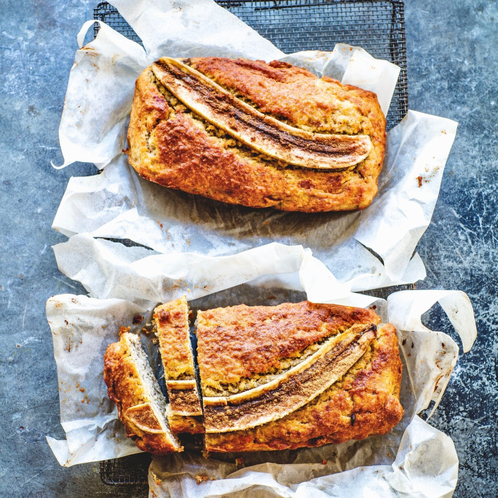

Sugar Free Banana Bread

Description
This recipe is naturally sweetened with fruit and an optional drizzle of agave syrup meaning less added sugar is required in this banana bread.
Ingridients
- 125g self-raising wholemeal flour
- ½ tsp baking powder
- 2 tsp ground cinnamon
- 75g sultana
- 50g butter, melted
- 2 tsp vanilla essence
- 1 egg
- 1 tbsp milk
- 3 ripe bananas, mashed
- drizzle agave syrup, to serve (optional)
Steps
- Grown ups: Preheat the oven to 180C/ 160C fan/ gas mark 4. Grease and line a 450g loaf/1lb tin with baking parchment.
- Children: Weigh the flour, baking powder, cinnamon and sultanas into a bowl and mix with a wooden spoon. Then weigh the butter, vanilla essence, egg, milk and mashed bananas and put into another bowl or jug and mix with a small balloon whisk or fork. Pour the ‘wet’ banana mixture into the ‘dry’ flour mixture and combine thoroughly with a wooden spoon. Weighing needs to be very accurate when baking so help older children to measure carefully. Younger children can also get involved by spooning or pouring into the scales with adult supervision. Younger children can also beat the egg with a fork and mash the banana with a potato masher.
- Grown ups: Pour the cake mixture into the prepared tin and bake for 30 - 40 mins or until a skewer inserted in the middle comes out clean. Remove from the oven, allow to cool in the tin for 10 mins then turn out.
- Children: Drizzle with agave syrup if using.